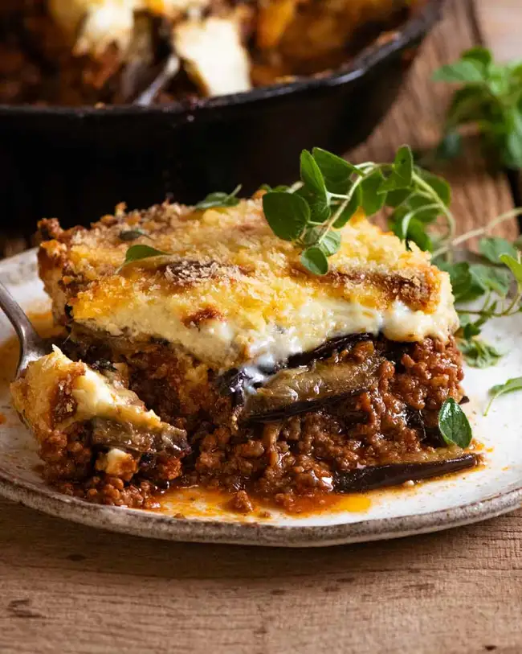

Moussaka

Moussaka (Greek Beef and Eggplant Lasagna)
Moussaka is to the Greek what Lasagna is to Italians. A rich tomato meat sauce layered with eggplant instead of
pasta sheets, and topped with a thick layer of béchamel sauce, this traditional Greek recipe takes time to
assemble – but it’s well worth the effort!
Ingredients
- 1 kg / 2 lb eggplant (aubergines)
- 1 tsp salt
- 2 - 3 tbsp olive oil
- 1 tbsp olive oil
- 1 onion
- **The list is pretty big so i put a few ingredients. Full ingredients list here moussaka recipe
Steps
- Place eggplant slightly overlapping in a large colander. Sprinkle with some salt. Repeat with remaining
eggplant.
- Leave to sweat for 30 minutes. Meanwhile, make Meat Sauce and Béchamel Sauce.
- Preheat oven to 240C/450F.
- Pat eggplant dry - make sure to do this well, otherwise it's too salty. Lay on parchment paper lined trays
(you might need 3 trays, work in batches), brush with oil.
- Bake 15 - 20 minutes or until lightly browned and softened . Remove and set aside to cool slightly.
- **For all the steps visit the link above!